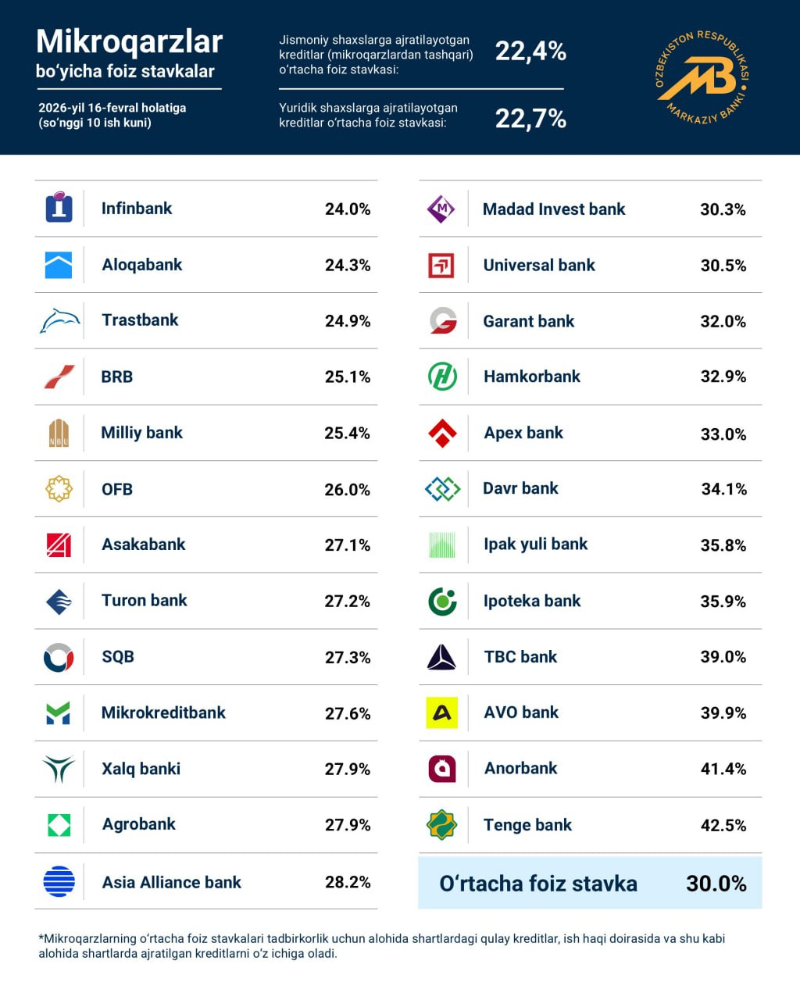
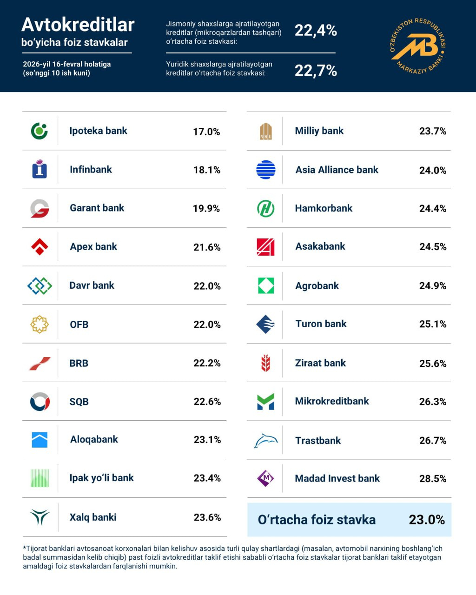

"Eng yaxshi mikrokredit va atokredit stavkalarini qaysi banklar taklif qilmoqda?"
Markaziy bank 2026 yil 16 fevral holatiga ko'ra, tijorat banklari tomonidan aholiga ajratilgan mikroqarz va avtokreditlar bo'yicha o'rtacha foiz stavkalarini e'lon qildi.
O‘zbekiston Respublikasi Markaziy banki 2026-yil 16-fevral holatiga ko‘ra, tijorat banklari tomonidan aholiga ajratilayotgan mikrokredit va avtokreditlar bo‘yicha o‘rtacha foiz stavkalarini e’lon qildi. Yangi haftada mikrokreditlar bo‘yicha o‘rtacha stavka 30,0 foizni, avtokreditlar bo‘yicha esa 23,0 foizni tashkil etdi. Yangi haftada mikrokreditlar bo‘yicha o‘rtacha foiz stavkasi 30,0 foizni tashkil etdi. Bu ko‘rsatkich o‘tgan haftada 30,8 foiz, undan oldingi haftada esa 31,0–31,7 foiz atrofida bo‘lgan. Shu tariqa, bozorda pasayish tendensiyasi davom etmoqda.

Mikrokreditlar segmentida eng past stavka 24,0 foiz bilan «Infinbank» tomonidan taklif qilinmoqda. O‘tgan haftada mazkur bank 24,3 foizlik stavka bilan ham yetakchi bo‘lgan edi. Shuningdek, «Aloqabank» 24,3 foiz va «Trastbank» 24,9 foiz darajasida nisbatan qulay shartlarni saqlab qolgan. O‘rta segmentda «BRB» 25,1 foiz, «Milliy bank» 25,4 foiz, «OFB» 26,0 foiz va «Asakabank» 27,1 foiz atrofida mikrokredit ajratmoqda. Eng yuqori stavkalar esa **«AVO bank»**da 39,9 foiz, **«TBC bank»**da 39,0 foiz, **«Anorbank»**da 41,4 foiz va **«Tenge bank»**da 42,5 foiz darajasida shakllangan.

Avtokreditlar bozorida ham pasayish kuzatildi. Yangi haftada o‘rtacha foiz stavkasi 23,0 foizni tashkil etdi. O‘tgan haftada bu ko‘rsatkich 23,0–23,4 foiz, undan oldingi haftada esa 23,6 foiz atrofida bo‘lgan. Bu ketma-ket pasayishni anglatadi.
Eng past avtokredit stavkasi 17,0 foiz bilan «Ipoteka bank» tomonidan taklif qilinmoqda. O‘tgan haftada eng maqbul taklif 17,9–18,0 foiz atrofida «Garant bank» va **«Ipoteka bank»**da qayd etilgan edi. Shu bilan birga, «Infinbank» 18,1 foiz va «Garant bank» 19,9 foiz stavka bilan kredit ajratmoqda.
Eng yuqori avtokredit stavkalari «TBC bank» va **«AVO bank»**da 39 foizdan yuqori emas, balki 28,5 foizgacha shakllangan bo‘lib, yangi haftada «Madad Invest bank» 28,5 foiz bilan yuqori segmentda yetakchi hisoblanadi.